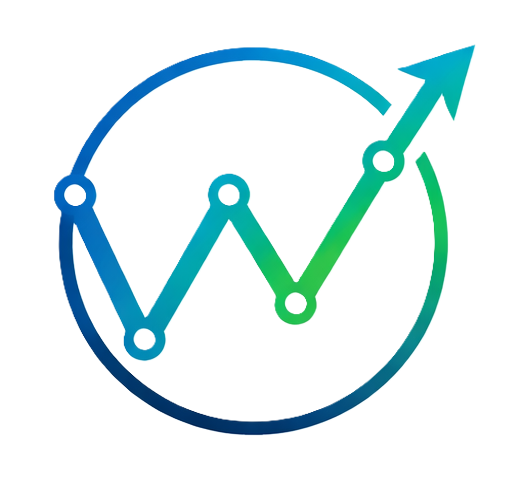

Orchestrating AI agents into powerful workflows.
Build, run, and scale intelligent automation powered by AI agents.
Request Early AccessWorld Aigent is a platform designed to orchestrate AI agents into structured workflows. Businesses can connect large language models, APIs, and enterprise tools to automate complex processes using intelligent agents that collaborate and execute tasks reliably.
Automate business processes by connecting multiple AI agents into structured pipelines.
Create workflows where specialized AI agents collaborate to solve complex tasks.
Connect AI agents with internal systems, APIs, and third‑party tools.
Run workflows reliably at scale using modern orchestration infrastructure.